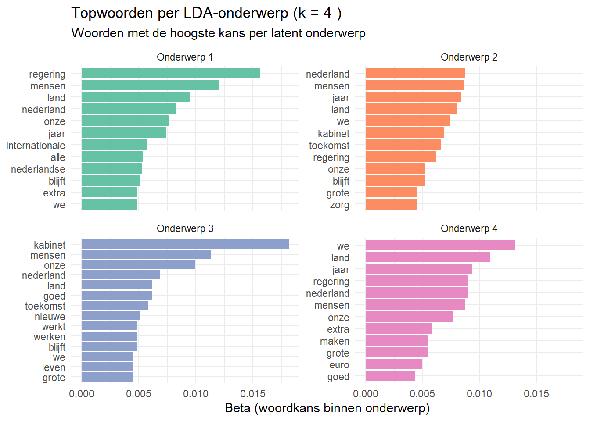
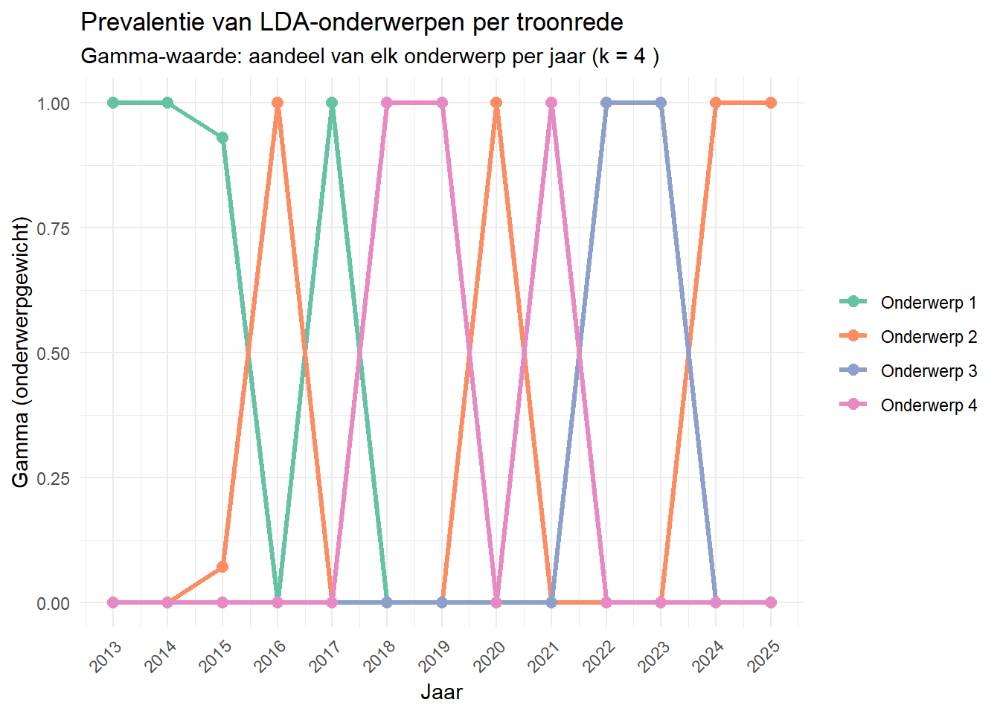

Opdracht 3 Onderwerpmodellering (LDA)
## <<DocumentTermMatrix (documents: 13, terms: 4199)>>
## Non-/sparse entries: 10296/44291
## Sparsity : 81%
## Maximal term length: 27
## Weighting : term frequency (tf)
Figuur 2.8: Topwoorden per LDA-onderwerp (k = 4). Het LDA-model verdeelt de dertien troonredes in 4 latente onderwerpen op basis van woordpatronen. Per onderwerp worden de twaalf woorden met de hoogste beta-waarde getoond — dat wil zeggen: de woorden die het meest kenmerkend zijn voor dat onderwerp. De onderwerpnamen zijn niet door het model gegeven en vereisen inhoudelijke interpretatie.

Figuur 2.9: Prevalentie van de LDA-onderwerpen per troonrede (2013–2025). De gamma-waarde geeft aan welk aandeel van een troonrede aan elk latent onderwerp wordt toegeschreven. Hogere waarden betekenen dat het betreffende onderwerp dominanter aanwezig is in dat jaar. Verschuivingen over de tijd kunnen samenhangen met wisselende beleidsagenda’s of externe gebeurtenissen zoals de coronapandemie of de energiecrisis.## Mijn ervaring {-}